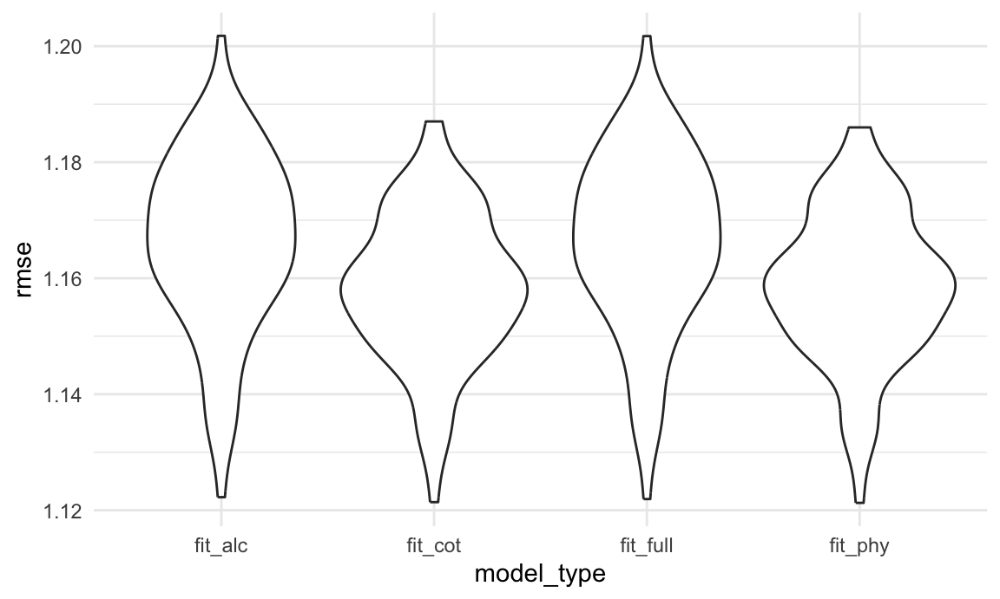
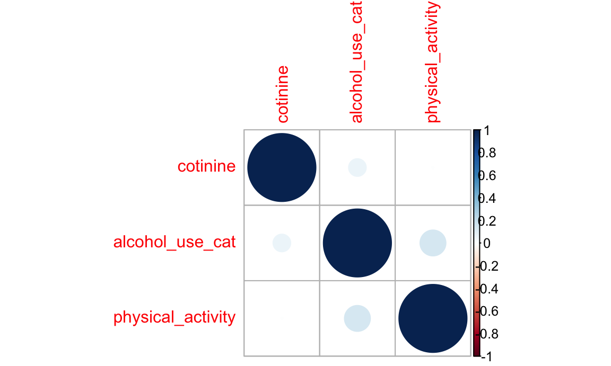
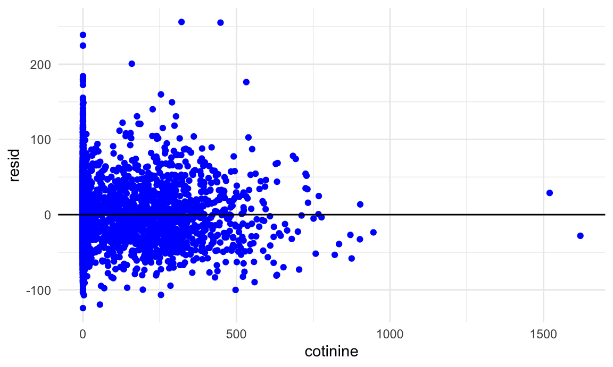

test for logistic model
model_cv_log_df =
model_df |>
mutate(
physical_activity = ifelse(physical_activity == "Light/Unknown activity", 0, ifelse(physical_activity == "Moderate activity", 1, 2)),
alcohol_use_cat = ifelse(alcohol_use_cat == "Light Drinker", 0, ifelse(alcohol_use_cat == "Moderate Drinker", 1, 2)),
physical_activity = as.numeric(physical_activity),
alcohol_use_cat = as.numeric(alcohol_use_cat)
)
log_fit_cot = glm(chol_cat ~ cotinine + age + gender + race + marital_status + education_level_20 + poverty_level, data = model_cv_log_df, family = binomial())
log_fit_phy = glm(chol_cat ~ physical_activity + age + gender + race + marital_status + education_level_20 + poverty_level, data = model_cv_log_df, family = binomial())
log_fit_alc = glm(chol_cat ~ alcohol_use_cat + age + gender + race + marital_status + education_level_20 + poverty_level, data = model_cv_log_df, family = binomial())
log_fit_full = glm(chol_cat ~ cotinine + physical_activity + alcohol_use_cat + age + gender + race + marital_status + education_level_20 + poverty_level, data = model_cv_log_df, family = binomial())
# r^2
rsquare(log_fit_cot, data = model_cv_log_df)
## [1] -0.2908566
rsquare(log_fit_phy, data = model_cv_log_df)
## [1] -0.2915931
rsquare(log_fit_alc, data = model_cv_log_df)
## [1] -0.3731137
rsquare(log_fit_full, data = model_cv_log_df)
## [1] -0.3737993
# rmse
# create training and testing sets
cv_log_df =
model_cv_log_df |>
crossv_mc(n = 100) |>
mutate(
train = map(train, as_tibble),
test = map(test, as_tibble)
)
cv_log_results =
cv_log_df |>
mutate(
log_fit_cot = map(train, \(df) glm(chol_cat ~ cotinine + age + gender + race + marital_status + education_level_20 + poverty_level, data = model_cv_log_df, family = binomial())),
log_fit_phy = map(train, \(df) glm(chol_cat ~ physical_activity + age + gender + race + marital_status + education_level_20 + poverty_level, data = model_cv_log_df, family = binomial())),
log_fit_alc = map(train, \(df) glm(chol_cat ~ alcohol_use_cat + age + gender + race + marital_status + education_level_20 + poverty_level, data = model_cv_log_df, family = binomial())),
log_fit_full = map(train, \(df) glm(chol_cat ~ cotinine + physical_activity + alcohol_use_cat + age + gender + race + marital_status + education_level_20 + poverty_level, data = model_cv_log_df, family = binomial()))
) |>
mutate(
rmse_log_fit_cot = map2_dbl(log_fit_cot, test, \(model, df) rmse(model, df)),
rmse_log_fit_phy = map2_dbl(log_fit_phy, test, \(model, df) rmse(model, df)),
rmse_log_fit_alc = map2_dbl(log_fit_alc, test, \(model, df) rmse(model, df)),
rmse_log_fit_full = map2_dbl(log_fit_full, test, \(model, df) rmse(model, df))
)
cv_log_results |>
select(starts_with("rmse")) |>
pivot_longer(
everything(),
names_to = "model_type",
values_to = "rmse",
names_prefix = "rmse_log_"
) |>
ggplot(aes(x = model_type, y = rmse)) + geom_violin()

logistic
x = cotinine
fit1 = glm(chol_cat ~ cotinine, data = model_df, family = binomial())
fit1 |>
broom::tidy() |>
knitr::kable(digits = 3)
| (Intercept) |
-0.71 |
0.026 |
-27.604 |
0.00 |
| cotinine |
0.00 |
0.000 |
-2.166 |
0.03 |
fit2 = glm(chol_cat ~ cotinine + age + gender + race + marital_status + education_level_20 + poverty_level, family = binomial(), data = model_df)
fit3 = glm(chol_cat ~ cotinine + age + gender + race + marital_status + education_level_20 + poverty_level + physical_activity + alcohol_use_cat, data = model_df, family = binomial())
fit3 |>
broom::tidy() |>
knitr::kable(digits = 3)
| (Intercept) |
-0.581 |
0.182 |
-3.187 |
0.001 |
| cotinine |
0.000 |
0.000 |
0.480 |
0.631 |
| age |
0.008 |
0.002 |
3.999 |
0.000 |
| genderMale |
-0.345 |
0.062 |
-5.557 |
0.000 |
| raceNon-Hispanic Asian |
0.206 |
0.120 |
1.725 |
0.085 |
| raceNon-Hispanic Black |
-0.285 |
0.093 |
-3.047 |
0.002 |
| raceNon-Hispanic White |
-0.125 |
0.084 |
-1.489 |
0.136 |
| raceOther Race |
0.183 |
0.144 |
1.270 |
0.204 |
| marital_statusNever married |
-0.341 |
0.089 |
-3.847 |
0.000 |
| marital_statusWidowed/Divorced/Separated |
0.061 |
0.075 |
0.821 |
0.412 |
| education_level_20College graduate or above |
0.077 |
0.117 |
0.661 |
0.509 |
| education_level_20High school graduate/GED or
equivalent |
-0.091 |
0.111 |
-0.820 |
0.412 |
| education_level_20Less than 9th grade |
0.190 |
0.159 |
1.192 |
0.233 |
| education_level_20Some college or AA degree |
0.031 |
0.108 |
0.287 |
0.774 |
| poverty_levelBelow 185% of Poverty Guidelines |
0.133 |
0.075 |
1.773 |
0.076 |
| poverty_levelBetween 130% and 185% of Poverty
Guidelines |
0.145 |
0.093 |
1.562 |
0.118 |
| physical_activityModerate activity |
0.052 |
0.079 |
0.663 |
0.507 |
| physical_activityVigorous activity |
0.014 |
0.080 |
0.181 |
0.856 |
| alcohol_use_catLight Drinker |
-0.494 |
0.088 |
-5.607 |
0.000 |
| alcohol_use_catModerate Drinker |
-0.302 |
0.089 |
-3.377 |
0.001 |
test for stratified linear regression
test_df =
model_df |>
filter(gender == "Male")
fit_2 = lm(total_cholesterol ~ cotinine + age + gender + race + marital_status + education_level_20 + poverty_level + physical_activity + alcohol_use_cat, data = model_df)
fit_2 |>
broom::tidy() |>
knitr::kable(digits = 3)
| (Intercept) |
195.282 |
3.486 |
56.025 |
0.000 |
| cotinine |
0.000 |
0.004 |
0.110 |
0.912 |
| age |
0.075 |
0.039 |
1.921 |
0.055 |
| genderMale |
-9.746 |
1.176 |
-8.289 |
0.000 |
| raceNon-Hispanic Asian |
3.676 |
2.347 |
1.566 |
0.117 |
| raceNon-Hispanic Black |
-6.615 |
1.760 |
-3.759 |
0.000 |
| raceNon-Hispanic White |
-2.562 |
1.617 |
-1.585 |
0.113 |
| raceOther Race |
1.556 |
2.807 |
0.554 |
0.579 |
| marital_statusNever married |
-7.191 |
1.604 |
-4.483 |
0.000 |
| marital_statusWidowed/Divorced/Separated |
2.010 |
1.456 |
1.380 |
0.168 |
| education_level_20College graduate or above |
3.231 |
2.230 |
1.449 |
0.147 |
| education_level_20High school graduate/GED or
equivalent |
-1.858 |
2.093 |
-0.888 |
0.375 |
| education_level_20Less than 9th grade |
5.550 |
3.084 |
1.799 |
0.072 |
| education_level_20Some college or AA degree |
1.223 |
2.038 |
0.600 |
0.549 |
| poverty_levelBelow 185% of Poverty Guidelines |
2.416 |
1.415 |
1.707 |
0.088 |
| poverty_levelBetween 130% and 185% of Poverty
Guidelines |
2.836 |
1.758 |
1.613 |
0.107 |
| physical_activityModerate activity |
1.171 |
1.511 |
0.775 |
0.439 |
| physical_activityVigorous activity |
0.801 |
1.518 |
0.528 |
0.598 |
| alcohol_use_catLight Drinker |
-11.943 |
1.711 |
-6.978 |
0.000 |
| alcohol_use_catModerate Drinker |
-8.128 |
1.749 |
-4.647 |
0.000 |
test for bin / cat cotinine level
test_df =
model_df |>
mutate(
coti_cat = ifelse(cotinine <= 10, 0, ifelse(cotinine > 10 & cotinine < 500, 1, 2))
)
fit_2 = lm(total_cholesterol ~ coti_cat + age + gender + race + marital_status + education_level_20 + poverty_level + physical_activity + alcohol_use_cat, data = test_df) |>
broom::tidy() |>
knitr::kable()
binary & categorial: neither sig
test for x and covariables
model_df |>
filter(!is.na(alcohol_use_cat)) |>
mutate(
alcohol_use_cat = ifelse(alcohol_use_cat == "Light Drinker", 0, ifelse(alcohol_use_cat == "Moderate Drinker", 1, 2)),
physical_activity = ifelse(physical_activity == "Light/Unknown activity", 0, ifelse(physical_activity == "Moderate activity", 1, 2)),
alcohol_use_cat = as.numeric(alcohol_use_cat)
) |>
select(cotinine, alcohol_use_cat, physical_activity) |>
cor() |>
corrplot()

test for multicolinearity (linear model)
test_vif =
model_df |>
select(total_cholesterol, age, cotinine, gender, race, marital_status, education_level_20, poverty_level, physical_activity, alcohol_use_cat)
fit_vif = lm(total_cholesterol ~ cotinine + age + gender + race + marital_status + education_level_20 + poverty_level + physical_activity + alcohol_use_cat, data = test_vif)
car::vif(fit_vif)
## GVIF Df GVIF^(1/(2*Df))
## cotinine 1.138405 1 1.066961
## age 1.467309 1 1.211325
## gender 1.122190 1 1.059335
## race 1.365912 4 1.039747
## marital_status 1.367480 2 1.081385
## education_level_20 1.480493 4 1.050270
## poverty_level 1.299660 2 1.067720
## physical_activity 1.189170 2 1.044266
## alcohol_use_cat 1.122676 2 1.029351
VIF = 1: There is no correlation between a given predictor variable
and any other predictor variables in the model. VIF between 1 and 5:
There is moderate correlation between a given predictor variable and
other predictor variables in the model. VIF > 5: There is severe
correlation between a given predictor variable and other predictor
variables in the model.
test for heteroscedasticity (linearmodel)
fit_vif = lm(total_cholesterol ~ cotinine + age + gender + race + marital_status + education_level_20 + poverty_level + physical_activity + alcohol_use_cat, data = test_vif)
test_vif |>
add_residuals(fit_vif) |>
ggplot(aes(y = resid, x = cotinine)) + geom_point(col = 'blue') + geom_abline(slope = 0)
## Warning: Removed 2752 rows containing missing values (`geom_point()`).

there is a trend –> when x=cotinine, there is a prob of
heteroscedasticity.